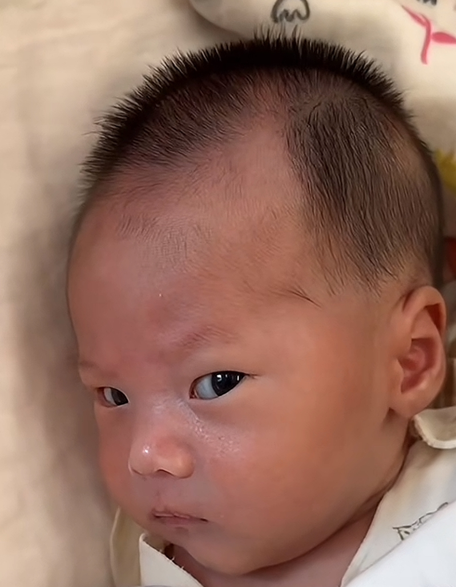

有人说抓晓舟腿那块儿，可比嬛嬛诚恳多了😆😆😆
我觉得娃生下来肯定带记忆然后慢慢没了
啥家庭啊就生我 
我女儿刚生出来，我老公故意逗她，没车没房还负债几十万，她脸色都变了，然后他爸马上说没有没有，有车呢刚买了房，瞬间嘴角上扬
小孩：排老久队哩，就给我安排这家庭[左上]
记得有个医生说，有个宝宝在肚子里的时候，因为严重的唇裂，那个妈妈做了3比四维彩超他都背对着机器，然后轮到这个医生了，他感觉很奇怪，就让妈妈说，不管宝宝什么样，都会要他的，都会爱他，结果就转身了
月子宝宝的眼神有时候真的很像大人，我家生下来我抱着一边喂奶一边看电视，发现没动静以为睡着了，猛一低头发现用那种打量和探究的眼神死死的盯着我，第一次体验到如坠冰窟，背上发毛的感觉，立马把眼睛移开了，再低头人又开始乖乖吃奶了，
等大了问问是不是自愿来的[捂脸]
博主你等着吃苦头吧[泪奔]报仇来了
真的像个中老年男人的眼神，就是那种大家长，嫌别人絮叨，狠狠瞪了一眼[发呆]我孩子还没出生，但是我干女儿我知道，月子里给人的感觉就不像小孩，表情也特别成熟，半岁以后才开始天真可爱
我女儿小时候[呲牙]，事实证明就是来报恩来爱我的
我生我儿子时候疼得晕了 然后迷迷糊糊就看到病房里来了一个乞丐朝我床走过来 然后等我再醒来 我儿子就出生了[抠鼻]真的
我家的[捂脸]
上辈子你是不是许愿了，前男友下辈子当你儿子
眼不见为净[微笑]
“怎么又是你”[微笑]
这是没相中你家，没相中父母[捂脸]，不知道偏偏让谁给推来的[憨笑]
我姐姐就是干这个的，这机器好几年前就有了，她说店里面不用机器是因为机器太快了，客人觉得容易不好收费，她们店员经常和客人说机器做的不如人工，纯手工怎样怎样，其实就是为了多收费，本质上机器做的可能比人工还好但是为了多收费都会和客人说纯手工好，咱们中国人就吃这套[捂脸]
秒杀你[呆无辜]
好凑
哥哥：书中自有黄金屋 MiKa：胃里能装一头猪
到这的时候就已经不对劲了
世上只有妈妈好，一模一样，不用开口就知道卡子到底爱谁～[尬笑][呲牙][呲牙][呲牙]
他们在恶心方面总是可以拔得头筹[泪奔]
“谁想的创意，好变态啊[尬笑]” “日本人[抠鼻]” “哦哦，那怪不得了[憨笑]”
我还是低估了日本人的变态[尬笑][尬笑]
男款的就是看着觉得嘴很臭
满朝大臣怎么支支吾吾有话直说啊
真是把变态倆字体现的淋漓尽致
明舒不会以为陆徜心里的人是苏棠梨吧[捂脸]
猫儿这个委屈
在互联网得到永生吧[憨笑]
哈基米😭——摸南北💔——绿豆😖——哦哦～ 😭，啊西噶😡——哈呀裤😭——难哦～😭💔💔💔💔
它把我奶奶咬了，然后又过来咬我，必须严惩
欺负一只小猫？
明天我就出走[憨笑]
我家猫除了自己饭盆里的水什么都喝
这样？[微笑][微笑][微笑]
猫眼中你杯子里的水：千万年酿制的甘露啊！
但是这个音色确实报听啊[黑脸]
在拜托啥啊 跳楼机都歌词写那么明确 这拜托拜托都 丘比特在拜托啥啊[憨笑]
但是还是不敢相信这是那个写了让他走的王澳楠[流泪]
不胖也不丑[黑脸]可是音色真的报听
世界要是能像爱南一样爱我就好了[大哭][大哭][大哭]
不是评论区那些变音加速的听惯了吧，我的妈呀[捂脸]听蚊子战歌听惯了是吧？[捂脸]
她的小腹那么平坦，真的是不胖的[逞强落泪]
很好听啊我觉得她声音有点像邓紫棋哎
之前好多明星唱甜歌说人夹 现在有正常唱又说人耗牛音
总感觉她唱歌有种哭腔
主要是声音和外观都挺有变化的[捂脸]
他叫田水清，89后的安顺紫云农村人，初中文化，因之前在工地上做油漆边在牛仔裤上创作写字和坚持自学书法而被大家熟知，后因工地工💰到年底难结清，现在是贵州老家一酒厂工作，无论从事什么工作都是为了生活，为了身边的亲人过得更好，学书是为让自己变得更自信，书法因融入生活才有了灵魂，，我希望能用文字的力量把美好传递给更多的人，愿生活能走进百姓生活，千家万户，把身边的美好分享给所有人，做一个终身学习的现实主义新农民草根书法人
特别喜欢写得一手好字的人，这是怎么练成的呢
我居然去搜蓝鲸拉屎了
大家都在搜：鲸鱼拉屎全过程！ 柏林，下次发这个视频之前先用小号做个鲸鱼拉屎全过程的视频，这样就可以一屎两吃了[看]
谁懂拉完屎把手放上去热乎乎的感觉，感觉就是天然的暖手宝[不失礼貌的微笑]
Read more: